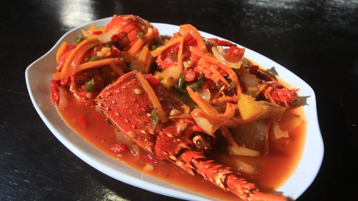

Lobster ini abangnya bilang udang lobster, tapi liat dari capitnya dan anatominya (cielah) kayaknya lobster deh tapi ini yg hidup di air tawar.
Bahan-baha untuk membuat Lobster bumbu Padang:
- -10 ekor baby lobster (direbus dulu sebentar, boleh enggak)
- -1/2 buah bawang bombay, iris
- -2 sendok makan saus tiram
- -2 sendok makan saus tomat
- -4 sendok makan saus sambal
- -secukupnya cabe rawit iris
- -1 batang daun bawang, iris
- -1 batang serai, geprek
- -1 ruas jari jahe, memarkan
- -1 butir telur/ putih telur, kocok
- -secukupnya gula, garam, lada, air
Bumbu halus
- -4 buah bawang merah
- -3 buah bawang putih
- -8 buah cabai merah/ keriting
Langkah-langkah:
- 1.Tumis bumbu halus, jahe dan serai hingga harum. Masukkan juga bawang bombay, cabai rawit, dan paprika (optional)
- 2.Masukkan saus-saus kemudian lobster. Aduk rata. Tambahkan secukupnya air, garam, lada bubuk dan gula. Biarkan air mendidih dan sedikit menyusut hingga bumbu meresap. Koreksi rasa.
- 3.Masukkan telur, aduk cepat hingga telur matang.
- 4.Siap disajikan, yuuummmmmy! 😋